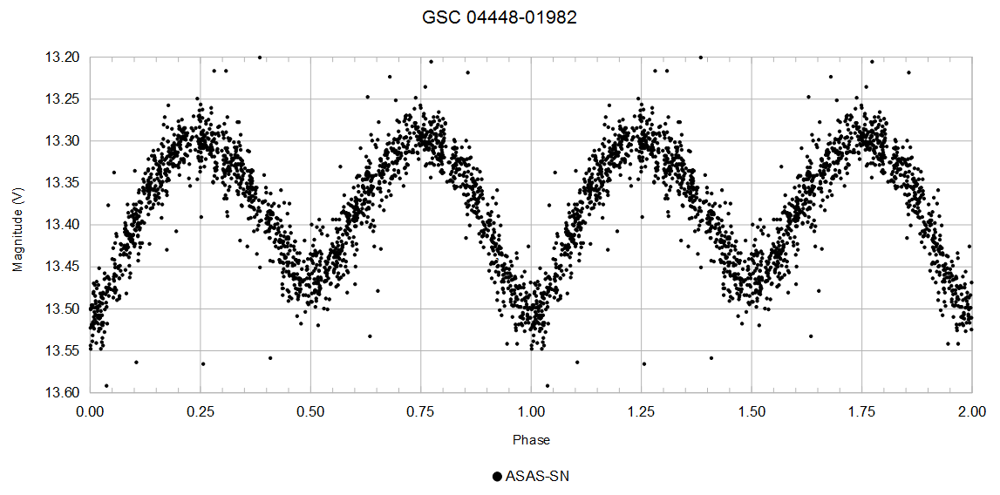
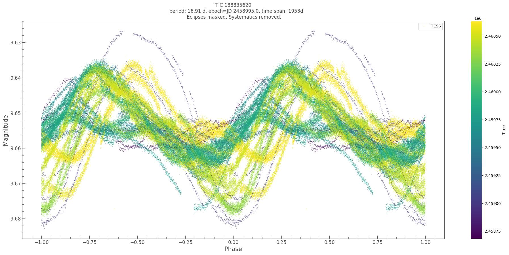
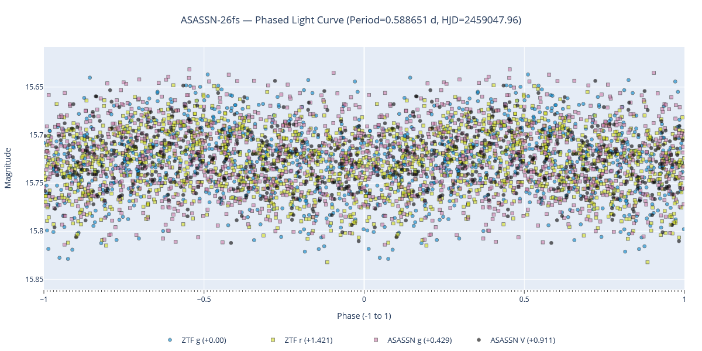
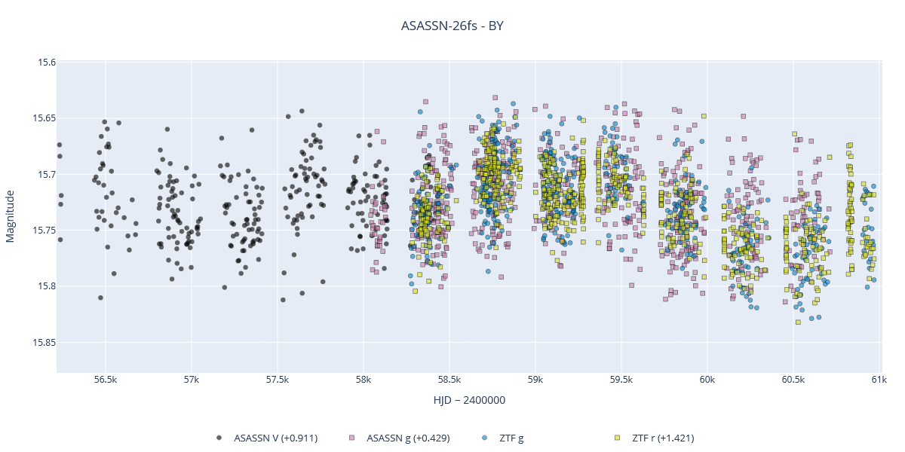
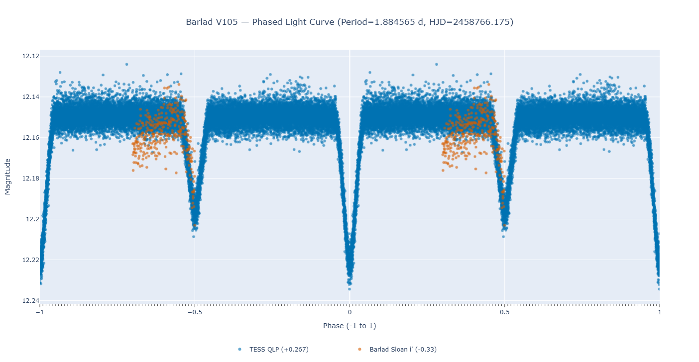

GSC 04448-01982
完整的基本字段示例：周期、历元、波段、次极小备注、巡天引用与自行分析的相位图。
EW；P = 0.520446 d；HJD 2458417.74；13.29–13.51 V；Min II = 13.47 V。
获批修订记录时间：2018-11-24 00:36 UTC。不据此推算审核耗时。
原作者附件 · VSX 原件

2026-11-23 · 已查到先前耀发报告，TIC 302959739 退出首次变星发现候选。
以下是获批条目的公开字段、备注、附件及修订记录，不是完整的私下申请与审核往来。范例图属于原作者。
本轮说明 · 英文复核草稿 · 新候选模板 · 查重证据 · 当前候选状态
完整的基本字段示例：周期、历元、波段、次极小备注、巡天引用与自行分析的相位图。
EW；P = 0.520446 d；HJD 2458417.74；13.29–13.51 V；Min II = 13.47 V。
获批修订记录时间：2018-11-24 00:36 UTC。不据此推算审核耗时。
原作者附件 · VSX 原件

目录 V 星等与 TESS 变幅分开；不同变化机制分别给周期、历元及幅度。发现者字段同时保留前人和后续团队贡献。
EA+ROT；主周期 22.2167 d；10.34 V (0.12)TESS；备注另列 ROT P = 16.91 d、HJD 2458995.0、幅度 0.054 TESS。
获批修订记录时间：2026-11-04 01:32 UTC。不据此推算审核耗时。
原作者附件 · VSX 原件

周期调制的幅度与含耀发的总亮度范围分开；相位图和按时间的光变图各说明一种证据。发现者 ASAS-SN 与提交者 Sebastian Otero 不同。
BY+UV；P = 0.588651 d；HJD 2459047.96；12.5–15.83 g；BY amplitude 0.20 g。
获批修订记录时间：2026-11-05 04:07 UTC。不据此推算审核耗时。
原作者附件 · VSX 原件

原作者附件 · VSX 原件

TESS 与地面测光联合展示；主、次食局部图为周期判断补证据。主图已查看，另外两份局部附件只核对到目录信息。
EA；P = 1.884565 d；HJD 2458766.175；12.15 V (0.072)TESS；次食幅度 0.046 TESS。
获批修订记录时间：2026-11-21 01:57 UTC。不据此推算审核耗时。
原作者附件 · VSX 原件
